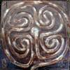
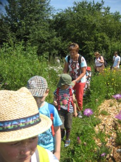

DAS LABYRINTH
„Blumen anschauen hat etwas Beruhigendes:
Sie kennen weder Emotionen noch Konflikte.“
Sigmund Freud
Als ich das Buch „Im Labyrinth sich selbst entdecken“ von Gernot Candolini zu Weihnachten bekommen habe, wusste ich noch nicht das in der Mitte unseres Gartens auch ein Labyrinth entstehen wird.
Mein Mann und ich hatten das Buch kaum zu Ende gelesen, da war es so weit. Das wir ein Labyrinth für uns ausgewählt haben und im Frühling stand es. Und jetzt, gibt es so viel zu entdecken in unserem Labyrinth, duftende Pflanzen, Bienen, Schmetterlinge, Hummeln, Wind, Schatten, Regentropfen und Schnee.

Wir haben dieses Labyrinth ausgewählt
Es handelt sich um ein Naturlabyrinth eingebettet in unsere Bienenweide. Viele Pflanzen wurden angesät, manche Duftpflanzen gepflanzt.
Was ist ein Labyrinth? „ Das ursprüngliche Labyrinth hat im wesentlichen immer die gleiche Form. Von einem Kreuz ausgehend, werden anfangs sieben, später mehr Kreise gezogen, die einen verschlungenen Weg bilden. Dieser Weg hat keine Abzweigungen, keine Sackgassen und keine Irrwege. Er führt hin und her, biegt immer wieder nach innen und nach außen ab und führt schließlich zur Mitte. Dort ist der Ort der Umkehr, und es führt der gleiche Weg wieder nach außen zurück. Der Weg des Labyrinths symbolisiert den schwierigen und verschlungenen Lebensweg des Menschen. „
Das Labyrinth ist mehr als ein Ursymbol, es ist die Suche nach der geheimnisvollen Mitte, nach dem Zuhause, genau wie in unserem Leben.
Es gibt im Leben viele Ereignisse: Die Geburt, eine bestandene Prüfung, einen Vertragsabschluss, eine Hochzeit, einen runden Geburtstag, die Rente, den Tod. Wer ein Labyrinth begeht, spürt die Ereignisse wieder. Die Mitte des Labyrinths kann eines dieser Ereignisse sein, es ist ein magischer Ort wo man länger bleibt. Diese Vollkommenheit berührt, die Mitte strahlt eine große Geborgenheit und Zufriedenheit aus. Es ist so schön das man nicht glauben kann, dass sich darin das eigene Leben, die Seele, die Erde, das ganze Universum wieder findet. Ich saß für ein Augenblick im Zentrum des Universums.
In Labyrinth stellt sich man die Frage: gehe ich richtig oder falsch? Wichtig ist das man geht.

Kindergarten Pusteblume aus Sonneberg auf Entdeckungstour in unserem Labyrinth, Mai 2013
Das Leben in unserer mitteleuropäischen Kultur orientiert sich sehr streng an dem Prinzip: Richtig ist gut, falsch ist schlecht. Wer eine falsche Entscheidung trifft macht einen unnötigen Umweg, er verliert kostbare Zeit, oder es passiert sogar etwas, das nicht wieder gutzumachen ist.
Das Symbol für diese Sicht der Dinge ist der Irrgarten. Wer in die Sackgasse gerät, ist einen Weg umsonst gegangen. Der hat den Irrgarten am „besten“ bewältigt der am wenigsten Fehler macht und den richtigen Weg möglichst schnell findet.
Das Labyrinth vermittelt in diesem Zusammenhang eine erstaunliche Botschaft. Es sagt: Die Frage nach Falsch oder Richtig ist unbedeutend, auf eine andere Frage kommt es an: „gehen oder stehen bleiben?“ lautet sie. Der Weg im Labyrinth ist immer richtig, auch wenn die Wendung von der Mitte wegführt. Jede Wendung muss man gehen, nichts kann ausgelassen werden, wenn man zur Mitte ankommen will.
Fehler zu machen ist nicht falsch. Ein Fehler ist keine Sackgasse und schon gar keine verlorene Zeit. Aus Fehlern nicht zu lernen, stehen zu bleiben und nicht weiterzugehen, das sind die wirklichen Irrtümer des Lebens.
Das Gehen mit den Kindern durch das Labyrinth ist immer für mich und auch für die Kinder faszinierend. Die Düfte, die Berührung und das Sammeln der Pflanzen erfreut die Kinder. Der Genuss des Tees aus selbst gesammelten Kräutern begeistert sie.